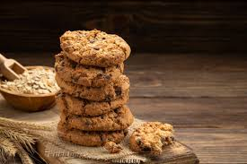

Ingredientes:
- 2 tazas de avena
- 1 taza de harina integral
- ½ taza de miel
- ½ taza de azúcar morena
- 1 cucharadita de esencia de vainilla
- ½ cucharadita de bicarbonato de sodio
- ½ taza de mantequilla derretida
- 1 huevo
Preparación:
- Precalienta el horno a 180°C.
- Mezcla la avena, la harina, el azúcar y el bicarbonato.
- Añade la miel, la mantequilla derretida, la vainilla y el huevo.
- Forma pequeñas bolitas y colócalas en una bandeja.
- Hornea por 12-15 minutos hasta que estén doradas.
- Deja enfriar y disfruta tus galletas de avena y miel. 🍪